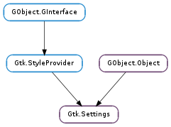

| static | get_default() |
| static | get_for_screen(screen) |
| static | install_property(pspec) |
| static | install_property_parser(pspec, parser) |
| set_double_property(name, v_double, origin) | |
| set_long_property(name, v_long, origin) | |
| set_property_value(name, svalue) | |
| set_string_property(name, v_string, origin) |
| Name | Type | Flags | Description |
|---|---|---|---|
| color-hash | GLib.HashTable | r | A hash table representation of the color scheme. |
| gtk-alternative-button-order | bool | r/w | Whether buttons in dialogs should use the alternative button order |
| gtk-alternative-sort-arrows | bool | r/w | Whether the direction of the sort indicators in list and tree views is inverted compared to the default (where down means ascending) |
| gtk-application-prefer-dark-theme | bool | r/w | Whether the application prefers to have a dark theme. |
| gtk-auto-mnemonics | bool | r/w | Whether mnemonics should be automatically shown and hidden when the user presses the mnemonic activator. |
| gtk-button-images | bool | r/w | Whether images should be shown on buttons |
| gtk-can-change-accels | bool | r/w | Whether menu accelerators can be changed by pressing a key over the menu item |
| gtk-color-palette | str | r/w | Palette to use in the color selector |
| gtk-color-scheme | str | r/w | A palette of named colors for use in themes |
| gtk-cursor-blink | bool | r/w | Whether the cursor should blink |
| gtk-cursor-blink-time | int | r/w | Length of the cursor blink cycle, in milliseconds |
| gtk-cursor-blink-timeout | int | r/w | xlib.Time after which the cursor stops blinking, in seconds |
| gtk-cursor-theme-name | str | r/w | Name of the cursor theme to use, or None to use the default theme |
| gtk-cursor-theme-size | int | r/w | Size to use for cursors, or 0 to use the default size |
| gtk-dnd-drag-threshold | int | r/w | Number of pixels the cursor can move before dragging |
| gtk-double-click-distance | int | r/w | Maximum distance allowed between two clicks for them to be considered a double click (in pixels) |
| gtk-double-click-time | int | r/w | Maximum time allowed between two clicks for them to be considered a double click (in milliseconds) |
| gtk-enable-accels | bool | r/w | Whether menu items should have accelerators |
| gtk-enable-animations | bool | r/w | Whether to enable toolkit-wide animations. |
| gtk-enable-event-sounds | bool | r/w | Whether to play any event sounds at all |
| gtk-enable-input-feedback-sounds | bool | r/w | Whether to play event sounds as feedback to user input |
| gtk-enable-mnemonics | bool | r/w | Whether labels should have mnemonics |
| gtk-enable-primary-paste | bool | r/w | Whether a middle click on a mouse should paste the ‘PRIMARY’ clipboard content at the cursor location. |
| gtk-enable-tooltips | bool | r/w | Whether tooltips should be shown on widgets |
| gtk-entry-password-hint-timeout | int | r/w | How long to show the last input character in hidden entries |
| gtk-entry-select-on-focus | bool | r/w | Whether to select the contents of an entry when it is focused |
| gtk-error-bell | bool | r/w | When True, keyboard navigation and other errors will cause a beep |
| gtk-fallback-icon-theme | str | r/w | Name of a icon theme to fall back to |
| gtk-file-chooser-backend | str | r/w | Name of the Gtk.FileChooser backend to use by default |
| gtk-font-name | str | r/w | Name of default font to use |
| gtk-fontconfig-timestamp | int | r/w | Timestamp of current fontconfig configuration |
| gtk-icon-sizes | str | r/w | List of icon sizes (gtk-menu=16,16:gtk-button=20,20... |
| gtk-icon-theme-name | str | r/w | Name of icon theme to use |
| gtk-im-module | str | r/w | Which IM module should be used by default |
| gtk-im-preedit-style | Gtk.IMPreeditStyle | r/w | How to draw the input method preedit string |
| gtk-im-status-style | Gtk.IMStatusStyle | r/w | How to draw the input method statusbar |
| gtk-key-theme-name | str | r/w | Name of key theme to load |
| bool | r/w | When True, there are only cursor keys available to navigate widgets | |
| bool | r/w | Whether to wrap around when keyboard-navigating widgets | |
| gtk-label-select-on-focus | bool | r/w | Whether to select the contents of a selectable label when it is focused |
| str | r/w | Keybinding to activate the menu bar | |
| int | r/w | Delay before the submenus of a menu bar appear | |
| bool | r/w | Whether images should be shown in menus | |
| int | r/w | The time before hiding a submenu when the pointer is moving towards the submenu | |
| int | r/w | Minimum time the pointer must stay over a menu item before the submenu appear | |
| gtk-modules | str | r/w | List of currently active GTK modules |
| gtk-primary-button-warps-slider | bool | r/w | Whether a primary click on the trough should warp the slider into position |
| gtk-print-backends | str | r/w | List of the GtkPrintBackend backends to use by default |
| gtk-print-preview-command | str | r/w | Command to run when displaying a print preview |
| gtk-recent-files-enabled | bool | r/w | Whether GTK+ remembers recent files |
| gtk-recent-files-limit | int | r/w | Number of recently used files |
| gtk-recent-files-max-age | int | r/w | Maximum age of recently used files, in days |
| gtk-scrolled-window-placement | Gtk.CornerType | r/w | Where the contents of scrolled windows are located with respect to the scrollbars, if not overridden by the scrolled window’s own placement. |
| bool | r/w | Set to True if the desktop environment is displaying the app menu, False if the app should display it itself. | |
| bool | r/w | Set to True if the desktop environment is displaying the menubar, False if the app should display it itself. | |
| bool | r/w | Whether the context menus of entries and text views should offer to change the input method | |
| bool | r/w | Whether the context menus of entries and text views should offer to insert control characters | |
| gtk-sound-theme-name | str | r/w | XDG sound theme name |
| gtk-split-cursor | bool | r/w | Whether two cursors should be displayed for mixed left-to-right and right-to-left text |
| gtk-theme-name | str | r/w | Name of theme to load |
| gtk-timeout-expand | int | r/w | Expand value for timeouts, when a widget is expanding a new region |
| gtk-timeout-initial | int | r/w | Starting value for timeouts, when button is pressed |
| gtk-timeout-repeat | int | r/w | Repeat value for timeouts, when button is pressed |
| gtk-toolbar-icon-size | Gtk.IconSize | r/w | The size of icons in default toolbars. |
| gtk-toolbar-style | Gtk.ToolbarStyle | r/w | Whether default toolbars have text only, text and icons, icons only, etc. |
| gtk-tooltip-browse-mode-timeout | int | r/w | Timeout after which browse mode is disabled |
| gtk-tooltip-browse-timeout | int | r/w | Timeout before tooltip is shown when browse mode is enabled |
| gtk-tooltip-timeout | int | r/w | Timeout before tooltip is shown |
| gtk-touchscreen-mode | bool | r/w | When True, there are no motion notify events delivered on this screen |
| gtk-visible-focus | Gtk.PolicyType | r/w | Whether ‘focus rectangles’ should be hidden until the user starts to use the keyboard. |
| gtk-xft-antialias | int | r/w | Whether to antialias Xft fonts; 0=no, 1=yes, -1=default |
| gtk-xft-dpi | int | r/w | Resolution for Xft, in 1024 * dots/inch. -1 to use default value |
| gtk-xft-hinting | int | r/w | Whether to hint Xft fonts; 0=no, 1=yes, -1=default |
| gtk-xft-hintstyle | str | r/w | What degree of hinting to use; hintnone, hintslight, hintmedium, or hintfull |
| gtk-xft-rgba | str | r/w | Type of subpixel antialiasing; none, rgb, bgr, vrgb, vbgr |
None
| Name | Type | Access |
|---|---|---|
| parent_instance | GObject.Object | r |
Bases: GObject.Object, Gtk.StyleProvider
Gtk.Settings provide a mechanism to share global settings between applications.
On the X window system, this sharing is realized by an XSettings manager that is usually part of the desktop environment, along with utilities that let the user change these settings. In the absence of an Xsettings manager, GTK+ reads default values for settings from settings.ini files in /etc/gtk-3.0, $XDG_CONFIG_DIRS/gtk-3.0 and $XDG_CONFIG_HOME/gtk-3.0. These files must be valid key files (see GLib.KeyFile ), and have a section called Settings. Themes can also provide default values for settings by installing a settings.ini file next to their gtk.css file.
Applications can override system-wide settings with Gtk.Settings.set_string_property (), Gtk.Settings.set_long_property (), etc. This should be restricted to special cases though; Gtk.Settings are not meant as an application configuration facility. When doing so, you need to be aware that settings that are specific to individual widgets may not be available before the widget type has been realized at least once. The following example demonstrates a way to do this:
gtk_init (&argc, &argv);
/&ast make sure the type is realized &ast/
g_type_class_unref (g_type_class_ref (GTK_TYPE_IMAGE_MENU_ITEM));
g_object_set (gtk_settings_get_default (), "gtk-enable-animations", FALSE, NULL);
There is one Gtk.Settings instance per screen. It can be obtained with Gtk.Settings.get_for_screen (), but in many cases, it is more convenient to use Gtk.Widget.get_settings (). Gtk.Settings.get_default () returns the Gtk.Settings instance for the default screen.
| Returns: | a Gtk.Settings object. If there is no default screen, then returns None. |
|---|---|
| Return type: | Gtk.Settings |
Gets the Gtk.Settings object for the default GDK screen, creating it if necessary. See Gtk.Settings.get_for_screen ().
| Parameters: | screen (Gdk.Screen) – a Gdk.Screen. |
|---|---|
| Returns: | a Gtk.Settings object. |
| Return type: | Gtk.Settings |
Gets the Gtk.Settings object for screen, creating it if necessary.
| Parameters: | pspec (GObject.ParamSpec) – |
|---|
| Parameters: |
|
|---|
| Parameters: |
|---|
| Parameters: |
|
|---|